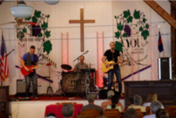
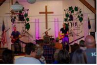
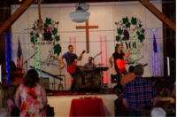
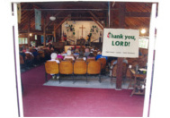
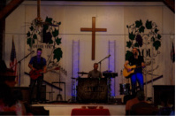
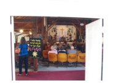

HOME
OUR HISTORY
A PRAYER
2015 SCHEDULE
OTHER EVENTS
REKINDLING YOUR SPIRIT
LODGING
COTTAGE AVAILABILITY
NEARBY ATTRACTIONS
DIRECTIONS
CONTACT US
DIMOCK
Camp Meeting Ground
Serving Christ in the Endless Mountains
2015 Dimock Schedule
---> All Services begin at 6:30 pm <---
Sunday, July 12 - Steve Hulslander and the
Susquehanna JamCrackers.
Nearby musicians will engage and enliven our spirits with a bit of
Gospel, Appalachian Blue Grass, and Traditional Hymns.
Sunday, July 19 - The
York County Gospel Choir.
Expect the unexpected with this joyfully exciting gospel choir.
The group brings song, dance, prayer, drama, and a card ministry to
inspire and enliven.
Sunday, July 26 - The
Williamson Branch.
This family of five leads worship with impressive family harmony,
excitement, and equally impressive humility.
Sunday, August 2 - Worship and Music.
Worship and Music led by The Rev. Charles Grube,
St. Paul Lutheran Church, Dallas.
Sunday, August 9 - Karen Knight with Heartsongs.
Karen uses story, acting and music to create inspiring presentations in
authentic costume based on Biblical women that are exciting, often
humorous and profoundly moving.
August 16 -
Scott Jacobs and Commandment 11.
This group has a unique ministry filled with songs that relate to many of the
everyday struggles and difficulties of life today.
August 23 -
The Farm Hands.
They are one of the most exciting groups in bluegrass music. They feature
award winning singers, musicians and songwriters, including veterans of
the Nashville Grand Ole Opry.
August 30 - Worship and Music.
The Rev. Jon Buston,
United Methodist Church, Tunkhannock,
will lead worship.
Music will be provided by the church choir.
September 6 - Worship, Song and Communion Service.
The Rev. Barbara Snyder, one of Dimock Camp Meeting's own, will lead
the final Worship and Song of the 2015 season. The service concludes
with a communion service and our traditional fellowship circle of song.
Sunday, July 5 - Saline.
The season opener features a Christian rock and modern worship band with
a sound melodically appealing to the young at heart.






All Services begin at 6:30 p.m.
The grounds are located a half mile west of Rt. 29 in Dimock, Pa.
(See DIRECTIONS for further details.)